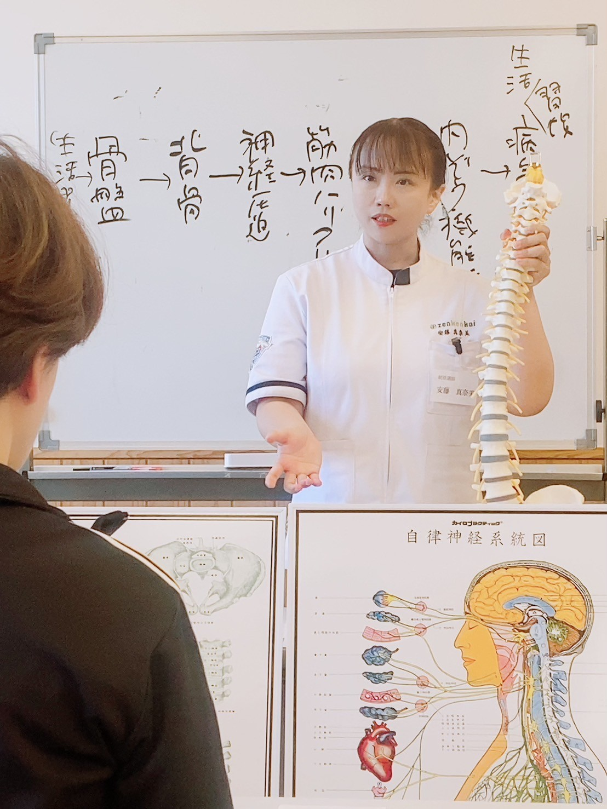
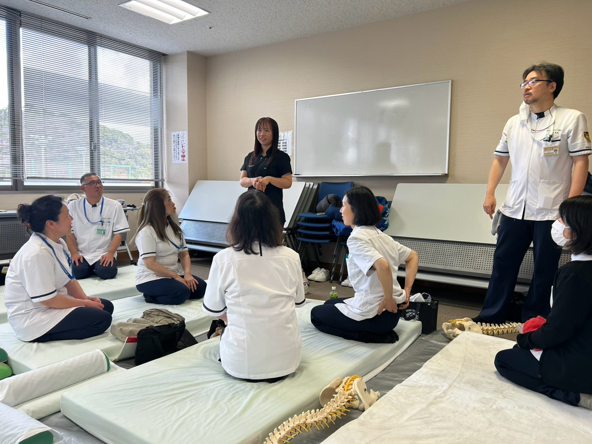
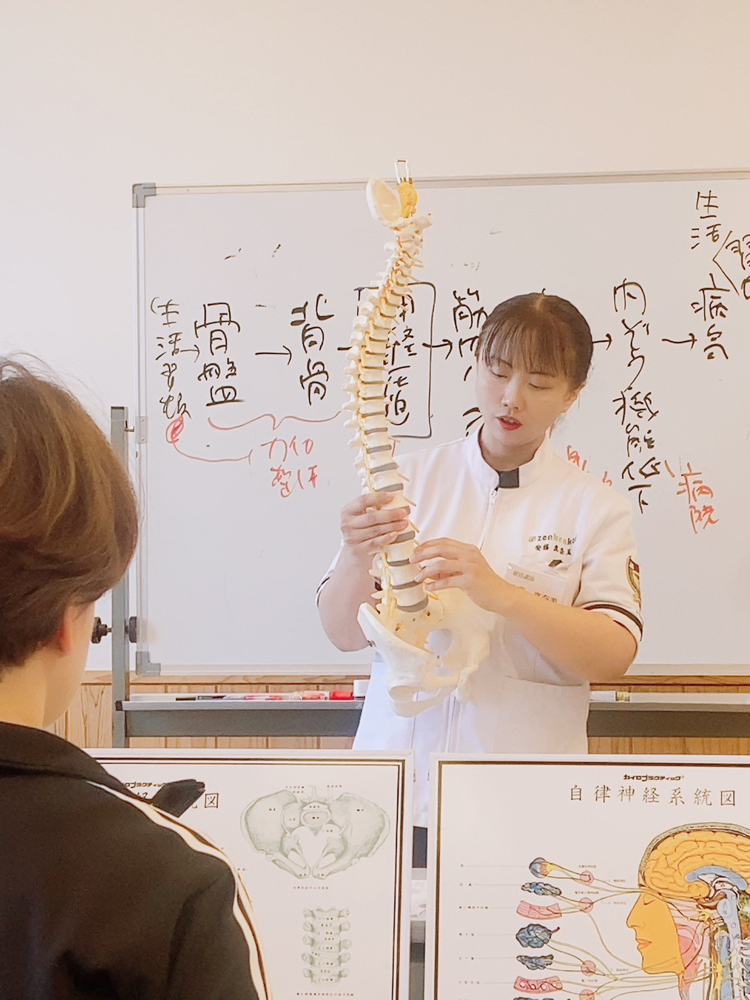
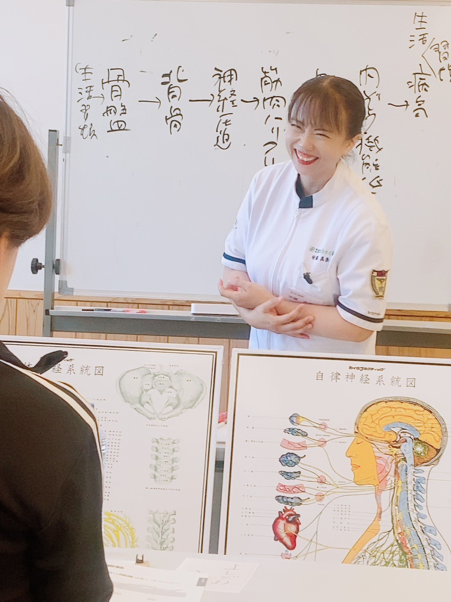

自分のために。
家族のために。
これからのために。
学びの第一歩は、
いちばん身近な「自分の身体」を見ることから。
まずは5つの質問で、
あなたの姿勢のクセをのぞいてみませんか。
福岡県福津市 レディースカイロうらら
男性・女性どちらもご利用いただけます
ひとつでも当てはまったら、
このページを少しだけ読んでみてください。
身体のしくみは、ふだん目に見えません。
骨も、筋肉も、身体の内側にあるからです。
でも、ひとつだけ、
身体のしくみが外に表れているものがあります。
それが「姿勢」です。
そのすべてが、姿勢に出ています。
だから、姿勢を見ることは、
身体のしくみを知るいちばんの近道なんです。
たとえば、肩がこりやすい人。
横から見ると、頭が少し前に出ていることがあります。
頭は、ボウリングの球ほどの重さ。
それが前に出ると、首や肩はずっと支え続けることになります。
肩だけを見るのではなく、
姿勢から、身体全体のつながりを見てみる。
それが、身体を学ぶ面白さです。
姿勢には、背骨や骨盤の並びや、毎日のクセが表れています。
だから、姿勢を見ることは、身体のしくみを知る近道です。
こんなことを聞いていきます
気軽に、思ったままに答えてみてください。
あなたは…
このタイプの姿勢が、
背骨や骨盤とどうつながっているのか。
おうちでできるセルフチェックと一緒に、
LINEでくわしくお届けします。
LINE登録は無料です。いつでも配信を止められます。
※医療的な診断ではなく、姿勢の傾向を知るためのチェックです。

背骨や骨盤など、身体の土台に目を向けて、
身体全体のつながりを見ていく考え方です。
家が土台に支えられているように、
身体も、土台のバランスを大切にしています。
学んでいくと、
自分の姿勢だけでなく、
家族の姿勢の変化にも気づけるようになっていきます。
読みやすい量で、少しずつお届けします。
LINE登録は無料で、いつでも配信を止められます。

もとは一級建築士。
生まれつき股関節に問題があり、幼いころに5回の手術を経験しました。
自分と家族のために学び始めたカイロプラクティックが、いつのまにか仕事になり、福津市で開院して12年になります。

30秒だけ、
あなたの姿勢のクセを見てみませんか。